Страницы авторов "Тёмного леса"
Литературный Кисловодск и окрестности
Пишите нам! temnyjles@narod.ru
Усадьба Знаменское-Садки, относительно недавно включенная в черту Юго-Запада Москвы, уникальна своими интерьерами - одними из немногих, уцелевших от классицистической эпохи. Благодаря их высокому художественному достоинству усадебный господский дом приобрел особую ценность. Знаменское до сих пор не ощущается частью современного индустриального города, как благодаря своей огромной территории, так и соседству с лесным массивом зоны отдыха.
От автобусной остановки "Зона отдыха "Битца"", расположенной на Московской кольцевой автодороге, кратчайший путь в усадьбу идет по грунтованной дорожке через бывшее поле. Только ближе к лесу в самой зоне отдыха под ногами появляется привычный асфальт. Сама зона отдыха, названа по начинающейся на территории Москвы речке Битце, на которой находятся два живописных пруда. Участок Битцы между зоной отдыха и усадьбой в настоящее время имеет статус памятника природы. По речке - Старой и Новой Битцами назывались деревни, до крестьянской реформы входившие в состав имения Знаменское-Садки, однако они находились не здесь, а территория зоны отдыха вместе с прудами - часть бывших земель, в т.ч. церковных соседнего Ясенева, отрезанных от него прокладкой кольцевой автодороги. Аллея, соединявшая Ясенево со Знаменским, частично сохранилась только по другую сторону кольцевой автодороги (улица Инессы Арманд), а здесь она совершенно вырублена. В самой зоне отдыха асфальтированная дорога раздваивается. Повернув налево, мы, миновав детскую площадку, достаточно скоро оказываемся перед решетками длинного современного забора, ограждающего основную часть Знаменского, с устроенными в нем воротами и проходной.
| 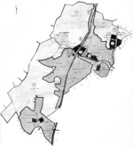 | План имения Знаменское-Садки. 1861 г. ЦИАМ.
1. усадьба. 2. деревня Битцы (Старые Битцы). 3. деревня Аннино (новые Битцы). 4. село Киово-Качалово. 5. "Господский Качаловский луг". 6. деревня Гавриково. 7. "Господский лес". 8. Старая (Большая) Серпуховская дорога. 9. Новая Серпуховская дорога. |
Изначально на месте усадьбы находилась небольшая деревня, называвшаяся Садки или Верхово. Первое название происходит от садков для рыб, которые могли быть устроены на речке Битце (Обитце или Анбитце), на которой и находилась деревня. Такого типа топонимы, данные исключительно по функциям какого-либо объекта, существовавшего в конкретной местности, не часты, но, тем не менее, встречаются. Например, аналогичного происхождения одно из ранних названий Кузьминок - Мельница - по существовавшей в этой местности мельнице; севернее Люблина находилась еще одна усадьба, также называвшаяся Садки (Чесменка) и т.п. Название Верхово скорее всего, как и большинство названий усадеб, имеет владельческое происхождение, т.е. образовано от прозвища кого-то из её забытых владельцев. Это тем более вероятно т.к. никакой географической реалии, которую можно было бы назвать "верхом", на территории усадьбы нет, наоборот вся местность имеет понижение в сторону юга.
Большую часть XVII в. деревня Садки, документально известная с 1617 года, принадлежала различным представителям рода Ладыженских{1}. Согласно книге "Древний Сосенский стан Московского уезда", написанной бароном Д.О.Шеппингом, владельцем соседней усадьбы - Никольское (Хованское), Садки "...была за Леонтием Ладыженским и сыновьями его Обросимом и Евстратием"{2}. Однако ниже им же отмечено, что Обросим (Абросим или Абрам) все-таки был не сыном, а племянником Леонтия Ладыженского, поскольку деревня Бачурино, тогда составлявшая единое целое с Садками, считалась ". поместьем Абросима Ивановича и Евстрата Леонтьевича Ладыженских, а прежде было за их отцами"{3}, соответственно Иваном и Леонтием Ладыженскими. Этому не противоречит писцовая книга Московского уезда 1627-1628 годов, в которой описана "деревня Садки, Верхово тож, на речке Обитце, - поместье Обросима Иванова сына Ладыженского, в деревне двор помещиков, дв[ор] приказчиков, дв[ор] людской, да крестьянских 3 дв[оров], в них 3 челов[ек]"{4}, то есть впервые упоминается усадьба. Поскольку "...писано за ним Обросимом то поместье по ввозной грамоте [7]125 [т.е. 1617] года"{5}, то, надо думать, приведенные Д.О.Шеппингом сведения относятся к более раннему времени, что позволяет считать Садки несколько старше.
В 1631 году Садки перешли к сыну предыдущего владельца Федору Обросимовичу (Абрамовичу) Лодыженскому (ум. после 1688), бывшему патриаршим, а затем царским стольником и воеводой в Ливнах. Он расширил свои владения, прикупив к ним в 1636 году соседнюю пустошь Ярцево на Ярцевском овраге, принадлежавшую вдове князя И.Барятинского. В 1644 году Ф.О.Ладыженский приобрел в Поместном приказе в вотчину сами Садки, ставшие его постоянной собственностью.
Будучи пожалован в думные дворяне в 1676 году, Ф.О.Ладыженский продал Садки своему зятю князю Никите Семеновичу Урусову (ум. 1692), приходившемуся троюродным братом царю Алексею Михайловичу, но сохранил за собой Бачурино. Н.С.Урусов в 1679 году стал боярином, служил воеводой в Новгороде, Киеве, Холмогорах, Архангельске.
При нем территория Садков также оказалась расширена, уже за счет присоединения в 1680 году деревни Коровкино (другие названия: Ортеево и Артемьево), купленной у некоего Романа Мотова (впоследствии упразднена). В самих Садках в 1687 году была сооружена деревянная одноглавая церковь Знамения Богородицы, по которой эта местность получила еще одно название - Знаменское, которое употреблялось параллельно с прежним, и со временем превратилось в следующие формы: Знаменская вотчина и, более знакомую нам, Знаменское-Садки{6}.
В 1692 году после смерти Н.С.Урусова Знаменское унаследовали его вторая жена Ефимия (Афимья) Григорьевна, урожденная княжна Щербатова вместе с детьми: князьями Федором, Иваном, Семеном и Алексеем Никитичами Урусовыми. По разделу имения единственным владельцем Знаменского-Садков стал старший сын Ф.Н.Урусов, бывший комнатным стольником. В 1697 году он был послан Петром I за границу для изучения морского дела, также как многие молодые дворяне, в том числе А.Ф.Лопухин, которому впоследствии принадлежало соседнее со Знаменским Ясенево. Вернувшись в Россию, Ф.Н.Урусов одно время занимался постройкой кораблей в Воронеже{7}.
В 1722 году Знаменское унаследовала его жена княгиня Елена Александровна Урусова{8}, а к 1731 году это имение уже принадлежало его племянникам: князьям Василию и Михаилу Семеновичам Урусовым{10} Последний не оставил потомства и достаточно скоро его брат В.С.Урусов стал единственным владельцем Знаменского. При нём много деревьев из знаменских угодий было использовано при создании в Лефортове Анненгофского сада. Тогда "крестьянин Филатов обязался перевезти из вотчины князя Урусова Московского уезда села Садков Знаменское тож по Серпуховской дороге из рощи липовых дерев: штамбовых [т.е. с высокими прямыми стволами - М.К.] - 2000, шпалерных - 1000. Ценою с вырыванием и перевозкою за штамбовые по 6 рублей, а за шпалерные - по 3 рубля за сотню"{11}
В 1750 году Знаменское-Садки приобрела у В.С.Урусова за 7 тысяч рублей княжна Екатерина Ивановна Трубецкая{12} Только сам факт существования этого лица отмечен в родословных этого рода. Ничем больше новая владелица Знаменского себя не зарекомендовала, не отметившись ни в чьих воспоминаниях и не прославившись каким-либо другим образом, и даже не выйдя замуж. Она была дочерью князя Ивана Юрьевича Трубецкого, но не знаменитого генерал-фельдмаршала, а его племяннника, президента юстиц-коллегии, прозванного Меньшим. Ко времени перехода Знаменского к Е.И.Трубецкой её отца уже не было в живых, о матери, Марии Яковлевне, урожденной Глебовой, никаких сведений мы не имеем{13}.
Единственным значимым событием, произошедшем в Знаменском при Е.И.Трубецкой, была замена ветхой деревянной церкви на каменную, сооруженную в 1754-1756 годах ".на другом поблизости удобном месте"{14}. Это небольшой каменный одноглавый храм типа восьмерик на четверике, с трапезной и двумя парными колоколенками над ней был интересным памятником позднего елизаветинского барокко, столь редкого в подмосковных усадьбах. Своей типологией, объемно-пространственной структурой и конструктивными приемами он восходил к традициям рубежа XVII-XVIII веков, нося провинциальный характер. Влияние новых стилевых форм было ощутимо преимущественно в церковном декоре.
Не позднее 1766 года Знаменское-Садки перешли к дяде бывшей владелицы гвардейскому капитану князю Дмитрию Юрьевичу Трубецкому (173?-1792){15}, впоследствии владевшему знаменитым "домом-комодом" у Покровских ворот (ныне Покровка, 22). Именно по нему Д.Ю.Трубецкой вместе с семьей получил ироническое прозвище "Трубецкие-комод", отличавшее их от других Трубецких.
При Д.Ю.Трубецком Знаменское существенно расширилось на юг и юго-восток за счет присоединения значительных территорий, ныне составляющих значительную часть современных районов Москвы "Северное Бутово" и "Южное Бутово". Так у соседнего владельца князя Г.А.Щербатова были приобретены село Киово и деревня Качалово, впоследствии известные под объединенным названием Киово-Качалово. А, кроме того, благодаря браку Д.Ю.Трубецкого с княжной Варварой Ивановной Одоевской (ум. 1788) к имению со временем вошли деревни Гавриково, Щибарово и Язва (Язвенка), а также "полсела Ивановского, смежного со Знаменским"{16}. Само же Знаменское с ближайшими окрестностями в "экономических примечаниях" к планам Генерального межевания Московского уезда описано следующим образом "Село на левом берегу речки Анбицы и на правом берегу безымянного отвершка [т.е. оврага - М.К.], церковь каменная Знамения Пресвятыя Богородицы. Деревни: Садки на правых берегах той же речки Анбицы и оврага Карцовского; деревня Анбицы [т.е. Битцы, впоследствии Старые Битцы - М.К.] на левом берегу означенной речки Анбицы и при большой Серпуховской дороге; церковная земля на правом берегу вышеписанной речки Анбицы и на левой стороне оврага Карцовского, земля глинистая, хлеб и покосы средственны, лес дровяной, крестьяне на пашне"{17}.
В ходе реконструкции в усадьбе был возведен ряд новых построек, в т.ч. ныне существующий большой господский дом, выполненный в формах зрелого классицизма. Он был поставлен на одной оси с церковью восточнее её. Двухэтажное с мезонином здание, сооруженное примерно в 1780-х годах, обращено главным южным фасадом к прудам, а северным к ныне сильно заросшему травяному партеру. Повышенная за счет мезонина центральная часть, выделена лоджиями с балконами над ними. Первый этаж проработан горизонтальным рустом. Первоначальный внешний вид здания можно представить только по более поздней малоудачной акварели из принадлежавшего Трубецким альбома, ныне хранящегося в Российской Государственной библиотеке{18}. К сожалению, ней полностью не зафиксирован ни один из фасадов дома, неизвестный художник ограничился только его фрагментом со стороны прудов, а именно югозападным углом, показав колонны несуществующего ныне портика.
| 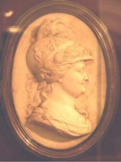 | Портрет Екатерины II в виде Минервы. Неизвестный скульптор. Кон. XVIII в. Московский областной краеведческий музей. Публикуется впервые. |
| 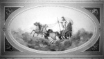 | Марс на колеснице. Плафон Розового (Марсового) Зала. |
| 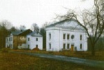 | Оранжерея ("зимний сад") |
В значительной степени в доме сохранилась старая планировка и первоначальная декоративная отделка некоторых помещений. Типичен для зрелого классицизма двусветный, хороших пропорций зал с хорами для музыкантов. Зал оформлен парными колоннами коринфского ордера, над антаблементом которых возвышаются украшенные акантами лепные кронштейны, как бы несущие живописный плафон перекрытия зала, поддуги которого расписаны под кессоны. В центральном овальном медальоне плафона изображена колесница бога войны Марса (в ряде изданий он ошибочно назван Аполлоном). Хотя искусствовед В.В.Антонов считал, что эту работу "из-за отсутствия документов и свидетельств современников можно пока с большой осторожностью отдать Джермано Скотти... "{19}итальянскому декоратору, позднее расписавшему интерьеры господского дома в Люблине, однако качество живописи не позволяет согласиться с этим предположением{20}.
В этом доме Д.Ю.Трубецкой принимал 23 июня 1787 года императрицу Екатерину II, которая возвращалась из поездки на юг страны, и встречавших ее внуков - великих князей Александра (будущего Александра I) и Константина Павловичей. Отсюда они направились в царский дворец, находившийся в селе Коломенском, а 27 июня торжественно вступили в Москву{21}. По местному преданию в честь приезда императрицы перед южным фасадом господского дома по инициативе Д.Ю.Трубецкого были высажены три дуба, два из которых сохранились до настоящего времени.
Господский дом окружен большим английским парком с преобладанием липы, также устроенном при Д.Ю.Трубецком во 2-й половине XVIII века. В настоящее время парк сильно зарос, никто его не чистит, поэтому он все больше и больше приближается к своему естественному состоянию, т.е. понемногу превращается в лес. В парке сохранились отдельные деревья 150-200 летнего возраста. Его живописность усиливала цепь прудов, устроенных на речке Битце. Из них к настоящему времени сохранился только один, самый большой с двумя небольшими насыпными островками. Три объекта, расположенные на территории парка и бывших усадебных угодий имеют статус памятников природы. Это Знаменский смешанный лес, Знаменская суборь, т.е. строевой высокоствольный лес из хвойных пород (ельник с сосной) и Знаменский малый ельник.
Ко времени Д.Ю.Трубецкого или его сына князя Ивана Дмитриевича Трубецкого (ум. 1827), унаследовавшего Знаменское в 1792 году, относится и сооружение западнее господского дома большого оранжерейного комплекса. В книге "Усадебное ожерелье Юго-Запада Москвы" мы его условно назвали зимним садом{22}. В настоящее время от этой оранжереи сохранились два отдельно стоящих сооружения, перемычка между которыми, где и находились растения, утрачена. О времени сооружения оранжереи нет четких документальных данных. Классицистическая обработка её восточной части, украшенной огромным треугольным фронтоном, позволяет предположить, что всё это сооружение было выстроено в последней четверти XVIII-начале XIX веков. Еще до Октябрьского переворота оранжерея утратила свое значение и была превращена во флигель{23}. К сожалению, на государственной охране оранжерея не стоит и юридически памятником архитектуры не является.
Новый владелец Знаменского И.Д.Трубецкой был женат на известной московской красавице Екатерине Александровне Мансуровой (ум. 1834), происходившей из старого, но обедневшего дворянского рода. Выйдя замуж за богатого камергера И.Д.Трубецкого, новоиспеченная княгиня приобрела общественное положение и, подчинив себе своего мужа, управляла им и его деньгами. "Бедная дворянка, прославившаяся своей красотой, которая доставила ей блистательнейшую фортуну, ибо она, не имея никакого состояния, попала замуж за богатого князя Трубецкого и весь век свой доныне проводит в изобилии и всяком довольстве", - вспоминал о ней один из гостей Знаменского поэт князь И.М.Долгоруков{24}.
Трубецкие практически постоянно проводили летние месяцы в своей усадьбе, за исключением перерыва во время Отечественной войны 1812 года. Тогда имение пострадало от наполеоновской армии, некоторые крестьянские дома были сожжены, а крестьянское имущество увезено французами{25}
Достопримечательность широкой сосновой аллеи, соединявшей усадьбу с Серпуховской дорогой - прямоугольная смотровая площадка над береговым обрывом Битцы, откуда открывался великолепный вид на ближайшие окрестности, испорчена недавней установкой памятника воинам, якобы похороненным здесь в Отечественную войну 1812 года. Тогда в Знаменском не было никаких боевых действий, и, соответственно, павших в бою или умерших от ран. Отметим, что если таковые бы и были, то их место последнего упокоения находилось бы у одной из ближайших церквей: либо в Знаменском-Садках, либо в Киове-Качалове. Однако в церковных метриках, хранящихся в Центральном историческом архиве г. Москвы, нет записей о похоронах в 1812 году погибших солдат{26}.
Как и большинство подмосковных помещиков И.Д.Трубецкой попросил помощи от властей, мотивируя это тем, что "оная вотчина неприятелем совершенно разграблена"{27}. Но именно ему - редкий случай - в поддержке было отказано.
Поводом для этого оказалось значительное состояние князя, имевшего помимо Знаменского имения в Воронежской, Калужской, Курской, Орловской и Тульской губерниях, а также на Украине. "По рассмотрении замечается, что его сиятельство из избыточного своего состояния не избытчая [т.е. не обеднев - М.К.] может привести подмосковных крестьян в первобытное [т.е. прежнее - М.К.] состояние и прокормить до нового урожая хлеба"{28}, -отметил Московский уездный предводитель дворянства А.А.Арсеньев, приняв решение -отказать в помощи И.Д.Трубецкому. Надо думать, что княжеская усадьба не слишком пострадала в 1812 году, поскольку И.Д.Трубецкой, перечисляя ущерб, нанесенный Знаменскому, ни разу не говорит о гибели непосредственно принадлежавших ему усадебных построек.
После войны Трубецкие вернулись в свою усадьбу, возобновив прежние забавы и праздники. Церковь, в которой побывали французы, в 1813 году была заново освящена{29}.
Создание любопытного образа жизни в Знаменском, какой она могла быть в эпоху Трубецких, принадлежит искусствоведу А.Н.Гречу: "Когда же устраивались в Знаменском нарядные охоты, происходил съезд гостей из ближних и дальних имений, внутри украшался зал плошками и фонариками, под звуки крепостного оркестра происходили танцы или ставились шарады и живые картины. Гости задерживались здесь на недели и месяцы - прогулки, чтения, игры сменялись здесь под гостеприимной кровлей, оставив след в любопытной книжечке "Les amisements de ZnamenskІрЙoe" ["Забавы Знаменского" -пер. с франц. - М.К.] где текст, по-видимому, принадлежит [Н.М.]Карамзину, в то время проживавшему с малолетними детьми князя [А.И.]Вяземского в соседнем Остафьеве"{30}.
Стиль Знаменского понят А.Н.Гречем достаточно верно, правда, нет никаких документальных указаний, на существование у Трубецких собственного крепостного оркестра - на эту мысль его видимо натолкнули хоры для музыкантов, находящиеся в Марсовом зале господского дома. Как правило, все мероприятия организовывали дети Трубецких и гости, одновременно являвшиеся и исполнителями и зрителями. Едва ли не единственным профессиональным музыкантом, демонстрировавшим в Знаменском своё искусство, был композитор И.И.Геништа - один из первых в России исполнителей фортепьянных концертов Л.Бетховена.
Гипотетическая возможность приезда Н.М.Карамзина в Знаменское пока также не получила документального подтверждения, однако кажется весьма вероятной, недаром его любовницей была "первая московская львица допожарной эпохи" княгиня П.Ю.Гагарина (по второму мужу Кологривова), являвшаяся близкой родственницей И.Д.Трубецкого. Ничего не известно и о книге "Забавы Знаменского", скорее всего А.Н.Греч имел в виду "Знаменский журнал", носивший аналогичный характер; одно время его вел М.П.Погодин, будущий известный историк и писатель, приглашенный в Знаменское в конце 1810-х годов в качестве учителя младших детей Трубецких за огромное по тем временам жалование сто рублей в месяц, а затем ставший личным секретарем владельца усадьбы.
Жизнь в Знаменском оказала существенное влияние на формирование взглядов и становление личности М.П.Погодина, родовая усадьба Трубецких стала для него, разночинца по происхождению, родным домом. Некоторые обитатели усадьбы были увековечены М.П.Погодиным в написанной в Знаменском повести "Русая коса". В образе графини О. он вывел свою любимую ученицу Александру Ивановну Трубецкую (впоследствии по мужу княгиню Мещерскую, 1809-1873), часто ходившую с распущенной косой, свою будущую жену Е.В.Вагнер изобразил под именем Марии, а себя в облике Минского.
Несмотря на дружеские взаимоотношения с Трубецкими внутреннюю неуверенность М.П.Погодина постоянно провоцировали мысли о его недворянском происхождении. Так, окончив университет, он в начале июля 1821 г. поехал в Знаменское, взяв с собой младшего брата Григория, однако поселил его не в усадьбе, а у приходского священника и тщательно скрывал от Трубецких свое родство с Григорием{31}. Еще более характерна такая проговорка в дневнике: однажды в Знаменском Трубецкие вспомнили об именинах отца Погодина -П.М.Погодина, и все поздравляли за обедом М.П.Погодина "с шампанским", ему же было стыдно.{32}
"Дорогое незабвенное Знаменское, где провел я лет девять приятнейших в моей жизни"{33}, происходившие в усадьбе события и обычную бытовую жизнь, развлечения молодых Трубецких и их гостей М.П.Погодин описал в своем дневнике, ныне хранящемся в Российской Государственной библиотеке: "ходили гулять на большую дорогу к кривому мосту... к большой дороге по краю сада...; играли в волан, в городки, качели... ; на большом пруду катались на лодках, устраивали морские сражения... " и т.п., кроме того "атмосфера здешняя располагала к занятиям и литературным трудам. Царил дух влюбленности и дружеских бесед". Очень интересны самые первые впечатления М.П.Погодина от Знаменского общества: "Удивительное влияние имеют на нас люди, с коими мы обращаемся. В целый месяц, как я живу здесь, ни одной почти дурной, в каком-либо отношении мысли не пришло мне в голову. Если б с младенчества окружали меня всегда такие люди".
В своей автобиографии М.П.Погодин позднее отметил, что "эти впечатления дополнял молодой товарищ [Ф.И.]Тютчев, к которому хаживал я иногда по соседству из Знаменского в соседнее Троицкое и заставал всегда за немецкою книгою. Его рассуждения свысока о Виланде и Шиллере, Гердере и Гёте, которых как будто принимал он в своей предгостинной, возбуждали желание сравниться с его начитанностью"{34}. Ф.И.Тютчев, тогда еще бывший не знаменитым поэтом, а просто способным студентом Московского университета, жил в семи верстах от Знаменского, в усадьбе своего отца Троицкое на Теплых Станах (ныне район поселка Мосрентген).
В дневнике М.П.Погодина в 1822 году зафиксированы его знакомство в Знаменском с владельцем Остафьева князем П.А.Вяземским, который впоследствии не раз оказывал ему поддержку{35}; приезд в Знаменское "бедной глупой" княжны М.Н.Волконской и её подруги Л.(Е.)И.Гениссиен - "княжна Волхонская явилась на сцене."; различные обстоятельства их жизни в усадьбе; интерес М.Н.Волконской к "Знаменскому обществу" -".говорил с Волхонской о характерах знаменских. Есть множество очень резких. Княгиня [Е.А.Трубецкая] имеет большой талант, держит всех в струнке, заставляет самых умных людей смотреть на свои глупости в уменьшительное стекло."; поездка М.Н.Волконской к жениху графу Н.И.Толстому в соседнюю усадьбу Ясенево, принадлежавшую князю С.И.Гагарину; сборы перед венчанием в ясеневской церкви -"Проводили княжну Волхонскую к венцу. Дай бог ей счастья", а также приезд новобрачной на другой день после свадьбы из усадьбы Узкое с мужем - "Молодые у нас"{36}. Вместе с ними приехали из Узкого граф и графиня П.А. и М.А.Толстые и их сыновья. Самый младший из них И.П.Толстой, также был учеником М.П.Погодина, который счел нужным развлечь его в Знаменском - "Катались на лодке с молодым графом Толстым, которого учу я в [университетском Благородном] пансионе". В честь молодоженов был дан "прекраснейший" обед. Из дневника М.П.Погодина следует, что на одном из берегов пруда, скорее всего, со стороны господского дома находилась пристань, с которой он после катания на лодке с И.П.Толстым по собственному признанию ".упал было в воду".
В Троицкое к Ф.И.Тютчеву М.П.Погодин тогда уже не ездил, поскольку тот сразу после окончания Московского университета оказался прикомандирован к российской миссии в Мюнхене сверх штата и только в июне 1825 года ненадолго вернулся в Москву в отпуск. Только к тому времени относится единственное документально известное посещение Ф.И.Тютчевым Знаменского, которое М.П.Погодин описал следующим образом: "Увидел Тютчева, приехавш[его] из чуж[их] краев; говор[ил] с ним об иностран[ной] литературе, о политике, образе жизни тамош[ней] и пр. Мечет словами, хотя и видно, что он там не слишк[ом] мн[ого] занимался делом; он пахнет двором. - Отпустил мне много острот. В России канцелярия и казармы. - Все движется вокруг кнута и чина. - Мы знали афишку, но не знали действия и т.п. [.] Смотрел на маленькое кокетство [княгини] Ал[ександры] Ник[олаевны Голицыной, урожденной Левашовой], которой, как говорит, не нравится Тютчев, но она говорит с ним беспрестанно и пр. Гов[орил] он об обществах; в Мюнхене общ[ество] малочисленное], - придворные и пр."{37}.
В том же году управляющим имениями И.Д.Трубецкого, в т.ч. Знаменским-Садками стал отставной коллежский асессор В.Д.Корнильев, широко известный в Москве, как хлебосольный хозяин, покровитель и друг многих литераторов и художников. Скорее всего, на эту службу он был принят по протекции М.П.Погодина. Впоследствии Знаменское мог посещать племянник В.Д.Корнильева - знаменитый химик Д.И.Менделеев.
В 1827-1834 годах Знаменским-Садками владела овдовевшая Е.А.Трубецкая{38}. Затем оно вместе с другими имениями перешло к её сыновьям: "камергеру и кавалеру" Юрию (1792-1848) и отставному корнету лейб-гвардии Конного полка Николаю (1807-1874) Ивановичам Трубецким{39}. До 1838 года они произвели раздел наследства, по которому единственным владельцем Знаменского стал Н.И.Трубецкой, в юности являвшийся воспитанником М.П.Погодина{40}. Современники считали князя добродушным, но крайне ограниченным человеком, недаром С.Т.Аксаков сделал его прототипом главного героя своей сатирической пьесы "Князь Луповицкий или приезд в деревню".
Н.И.Трубецкой провел в усадьбе значительные строительные работы, в ходе которых был неудачно реконструирован господский дом, утративший значительную часть своей выразительности. Фасады были частично изменены в псевдоренессансных формах, при этом оно лишилось портика со стороны южного фасада, замененного балконом. То же время были устроены дополнительные входные проемы. Одновременно с этими работами слева и справа от господского дома были сооружены два двухэтажных флигеля, из которых к настоящему времени существует только восточный. Его нижний кирпичный этаж трактован как цоколь, на котором поставлен основной объем, сложенный из бревен. Как и другие сооружения усадьбы, флигель малоисследован, одно время считалось, что он сооружен в 1900-х годах.
Возможно ко времени Н.И.Трубецкого относится сооружение еще одной усадебной оранжереи, от которой сохранились два невыразительных квадратных в плане двухэтажных домика из красного кирпича, находящиеся при входе с запада на территорию Знаменского-Садков сразу за забором налево от дороги. Не существует находившееся между зданиями большое остекленное помещение, в котором непосредственно выращивали различные фрукты и цветы. Какие либо документальные материалы об усадебной оранжерее пока не поставленной на государственную охрану, не выявлены. На основании стилистического анализа её можно отнести к 1830-м-1840-м годам, однако такая датировка достаточно условна.
В "запрудной части" имения при Н.И.Трубецком были возведены два крупных хозяйственных комплекса: конный и скотный дворы. Несомненно, образцом для скотного двора (молочной фермы) стали аналогичные заведения в Зенине Дивовых (Московский уезд) и Кузьминках. Обращает на себя внимание стилистическое и планировочное сходство кузьминского скотного двора сооруженного по проекту А.О.Жилярди со скотным и конным дворами в Знаменском-Садках, в архитектуре которых можно проследить мотивы средневековой западноевропейской архитектуры, как готической, так и барочной. Скотный двор Знаменского-Садков является возможным аналогом молочной фермы, устроенной в уже более позднее время в усадьбе Муромцево (Владимирская губерния), принадлежавшей Храповицким.
Существует устойчивая традиция, приписывающая создание конного и скотного дворов в Знаменском-Садках архитектору М.Д.Быковскому, работавшему в Кузьминках и некоторых других подмосковных усадьбах{41}. Поскольку примерно к тому же времени относятся реконструкция господского дома и строительство флигеля, то и их стали связывать с именем М.Д.Быковского. Однако документальных подтверждений его работы в Знаменском-Садках не обнаружено, и, пока их нет, авторство М.Д.Быковского нужно считать его всего лишь одной из гипотез{42}.
В 1843 году был изменен статус усадебной церкви, которая утратила самостоятельность, будучи приписана к церкви соседнего села Киова-Качалова. Это решение, очевидно, принятое не без участия Н.И.Трубецкого, мотивировалось тем, что "в Садках только один господский дом, и крестьяне уже лет сто тому назад [т.е. при Д.Ю.Трубецком - М.К.] все были переселены на старую Серпуховскую дорогу в деревню Обитцы или Битцы, образовавшую выселок"{43}. Этот недавно появившийся "выселок", находившейся восточнее Знаменского-Садков и Битц, получил официальное название Аннино в честь жены Н.И.Трубецкого Анны Андреевны, урожденной графини Гудович, но в обиходе именовался Новые Битцы. Соответственно деревня Битцы, получила еще одно название -Старые Битцы.
Впоследствии Н.И.Трубецкой долгое время жил во Франции, где перешел в католичество, но время от времени писал славянофильские брошюры. Такое, казалось бы, несовместимое сочетание религиозных и политических убеждений остроумно высмеял Н.А.Некрасов в следующей эпиграмме.
| 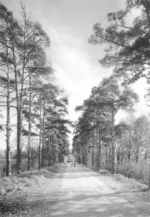 | Подъездная аллея в Знаменское-Садки со стороны Старой Серпуховской дороги. |
| 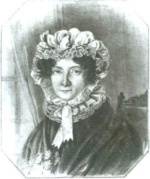 | Портрет Е.А.Трубецкой (?). Неизвестный художник. 1820-е гг. ОР РГБ. |
| 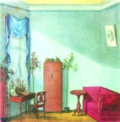 | Интерьер будуара в Знаменском-Садках. 1820-е гг. ОР РГБ. |
| 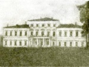 | Господский дом (северный фасад). Фото 1930-х гг. Частное собрание (Москва). |
| 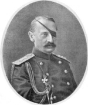 | Н.А.Орлов. Литография И.Кадушина нач. XX в. с оригинала сер. XIX в. Собрание М.Ю.Коробко. |
Согласно уже упоминавшейся нами работе "Древний Сосенский стан Московского уезда", считается, что Н.И.Трубецкой передал Знаменское своей единственной дочери княгине Екатерине Николаевне Орловой (1840-1885){44}. Однако, это опровергают материалы, хранящиеся в Центральном историческом архиве г. Москвы: Н.И.Трубецкому Знаменское принадлежало вплоть до 1865 года{45}, когда это имение перешло к своим следующим владельцам: бывшему московскому вице-губернатору тайному советнику Ивану Павловичу Шаблыкину (1809-1888) и его жене Екатерине Николаевне, урожденной Шамшевой{46}. Поэтому Е.Н.Орлова юридически никогда не была владелицей Знаменского, а при совершении сделки с Шаблыкиными, видимо, заменяла Н.И.Трубецкого, приезд которого в Россию был невозможен из-за принятия католичества.
Ее муж - князь Николай Алексеевич Орлов (1827-1885), потерявший в 1854 году левый глаз в бою под Силистрией, автор знаменитой записки об отмене телесных наказаний, тогда был чрезвычайным посланником и полномочным министром при дворе короля Бельгии{47}. Долго жившие за границей Орловы, не были заинтересованы в сохранении усадьбы.
Новому владельцу Знаменского-Садков - И.П.Шаблыкину принадлежал и знаменитый дом в самом центре Москвы на Тверской улице, в котором находился Английский клуб. О деятельности Шаблыкиных в Знаменском известно немногое. Помимо огромной территории имения они посчитали своей собственностью и церковную землю, которой и пользовались без какого-либо вознаграждения священника{48}.
В 1876 году Шаблыкины продали Знаменское за 30 тысяч рублей виднейшему публицисту консервативного толка Михаилу Никифоровичу Каткову (1818-1887){49}. Этот владелец имения в молодости участвовал в литературном кружке писателя Н.В.Станкевича, дружил с В.Г.Белинским, но позже разошелся со своими друзьями, примкнув к лагерю писателей-славянофилов. К чести М.Н.Каткова необходимо отметить, что он всегда оставался независимым от влияния каких-либо официальных лиц, но зачастую оказывался более нетерпимым, чем власти. Вместе с публицистом П.Н.Леонтьевым М.Н.Катков арендовал газету "Московские ведомости", на долгие годы превратившуюся в оплот "охранительного начала". Кроме того, им же издавался и "литературный и политический" журнал "Русский вестник".
Есть основания предположить, что при М.Н.Каткове Знаменское-Садки оказались связаны с именем великого русского философа В.С.Соловьева. Еще один из его первых биографов, С.М.Лукьянов, задавался вопросом: "Не случалось ли и в Знаменском бывать Соловьеву?"{50} В письме поэту князю Д.Н.Цертелеву В.С.Соловьев сообщал о своем намерении посетить подмосковную М.Н.Каткова осенью 1876 года, поскольку "...это вернее чем в редакцию"{51}. С большой долей вероятности можно предположить, что эта поездка состоялась{52}. Среди других друзей и знакомых М.Н.Каткова, в разное время посещавших Знаменское, значатся профессор физики Московского университета Н.А.Любимов{53}, попечитель Московского учебного округа князь Н.П.Мещерский{54}, личный секретарь С.И.Соколов{55} и др.
М.Н.Катков прожил в Знаменском до конца жизни, с годами все больше склоняясь к желанию отойти от политики и вернуться к любимому занятию юности - философии. 20 июля 1887 года после трехнедельной болезни он скончался в господском доме своей усадьбы. Тело М.Н.Каткова было перевезено в Москву и похоронено на территории Алексеевского монастыря (могила не сохранилась).
Имение унаследовала его вдова, Софья Петровна, урожденная княжна Шаликова{56}. "Она была худа, плечи высоки, нос велик, не богата" вспоминал о ней единомышленник М.Н.Каткова К.Н.Леонтьев{57}. По воспоминаниям писателя Е.М.Феоктистова эта дама была "дурна собой" и выделялась "образцовой глупостью"{58}.
| 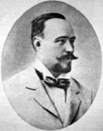 | А.М.Катков. Фото кон. XIX - нач. XX в. Частное собрание (Москва) |
| 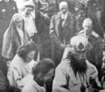 | М.В. и А.М. Катковы на закладке церкви на Братском кладбище (на переднем плане священнослужители, за ними: слева - великая княгиня Елизавета Федоровна, справа - великий князь Иоанн Константинович). фото 1915 г. Частное собрание (Москва) |
В 1889 году она передала Знаменское в собственность своему старшему сыну Андрею Михайловичу Каткову (1863-1915){59}, впоследствии действительному статскому советнику, имевшему и придворное звание камер-юнкера. Новый владелец много служил по выборам от дворянства, и в земствах, был попечителем земских начальных училищ (школ) в Аннине и соседних населенных пунктах: Царицыне и Чертанове, членом учетноссудного комитета по сельскохозяйственным кредитам Московской конторы Государственного банка и, помимо того, активно занимался хозяйством своего подмосковного имения. Он очень добросовестно относился к своим обязанностям Подольского уездного предводителя дворянства, сумев объединить деятельность всех органов управления уезда, и занимал эту должность много лет. Во время Русско-японской войны А.М.Катков уехал на фронт в качестве уполномоченного дворянской организации врачебно-санитарных отрядов{60}.
Сведения о его супруге фрейлине Марии Владимировне Катковой, урожденной княжне Щербатовой (1864-не ранее 1921) более отрывочны. В бумагах последнего владельца Остафьева графа С.Д.Шереметева, хранящихся в Российском Государственном архиве древних актов, сохранилось несколько писем М.В.Катковой{61}. Сын С.Д.Шереметева, впоследствии бывший первым директором музея в Остафьеве, высоко оценил уровень суконного дела, организованного ею в Знаменском{62}.
На рубеже XIX-XX веков в "запрудной" части Знаменского-Садков было выстроено небольшое одноэтажное каменное здание прачечной, дошедшее до наших дней (согласно описи и плану 1908 года, тогда за нею находился деревянный птичник, утраченный в советское время){63}. По свидетельству жителя Старых Битц Г.Я.Галченкова, в десятилетнем возрасте работавшего на покосах в Знаменском, при Катковых в усадьбе была устроена электростанция, что позволило электрифицировать господский дом и оранжереи. Динамо-машина стояла у плотины ныне существующего пруда, на месте, где некогда находилась водяная мельница.
В 1908 году на средства М.В.Катковой был быстро сформирован санитарный отряд, оказавший помощь Белопесоцкой слободе Серпуховского уезда, затопленной водами сильно разлившейся реки Оки{64}. В том же году она унаследовала от своего дяди А.А.Столыпина знаменитое имение Тарханы (Пензенская губерния), в котором прошло детство М.Ю.Лермонтова. Но Катковы не жили в нем постоянно, предпочитая Знаменское, заложенное в Московском земельном банке{65}.
Вскоре после начала Первой мировой войны оба их сына: унтер-офицер Андрей и корнет Михаил Андреевичи Катковы погибли 6 августа 1914 года на фронте. Тела убитых перевезли в Знаменское, похоронив в небольшом склепе устроенном на территории усадьбы, рядом с церковью. По свидетельству знакомой Катковых А.Г.Шатиловой "на могилах всегда цвели фиалки и горели лампады"{66}. Ровно через год родители, желая увековечить память детей, заложили на Братском кладбище - памятнике жертвам войны в подмосковном селе Всехсвятском (ныне в черте столицы) спроектированную архитектором А.В.Щусевым большую пятиглавую церковь и открыли, устроенное на их же средства отдельное кладбище для сестер милосердия{67}. Предполагалось, что тела А.А. и М.А. Катковых будут перенесены в церковь на Братском кладбище, после окончания строительных работ, однако этому помешал Октябрьский переворот.
После смерти А.М.Каткова, последовавшей 26 декабря 1915 года{68}, Знаменское, согласно завещанию, унаследовала его жена{69}. Впоследствии она вместе с некоторыми родственниками, носившими ту же фамилию, получила княжеский титул и стала именоваться княгиней Катковой-Шаликовой. Но это произошло уже при Временном правительстве{70}. Хлопоты об этом объясняются прекращением рода князей Шаликовых, бывших в родстве с Катковыми.
В 1918 году новоиспеченную княгиню выселили из Знаменского, разрешив ей взять лишь личные вещи и семейные фотографии. Тогда на Знаменское оказалось больше претендентов, чем на другие имения, поскольку его огромная территория относилась сразу к двум уездам Московской губернии: Московскому и Подольскому (граница между ними проходила по речке Битце). Господский дом усадьбы вместе со всей находящейся в нём к тому времени обстановкой был передан Московскому центральному рабочему кооперативу. Бывшие служащие имения организовали Знаменскую трудовую коммуну, получившую в собственность конный и скотный дворы имения, т.е. его часть, находившуюся в Подольском уезде. У них осталось только 2 лошади и 2 коровы -остальной скот был увезен из Знаменского по решению Сухановского волостного совета Подольского уезда{71}.
Схематический план, составленный в 1918 году при передаче коммуне скотного и конного дворов, позволяет уточнить непосредственное использование всех их помещений при Катковых. Так северную, т.е. центральную часть скотного двора занимала непосредственно молочная ферма, южную часть рига с молотилкой, восточную - сарай для соломы, кухня при молочной ферме и людская, а западную - овчарни, молочная, ледники и квартира управляющего. В свою очередь, восточную часть конного двора занимали, разумеется, конюшни, южную - кучерская, каретник, погреб и кладовые, в западной части находились жилые помещения, устроенные в угловом двухэтажном объеме, решенном в виде башни, и навес{72}.
Хотя в уставе Знаменской коммуны было записано, что во внутренней жизни она должна была быть беспартийной, но, тем не менее, там же отмечалось, что одной из её целей было "воспитание и образование детей [собственных - М.К.] в духе коммунизма."{73}, которые с 12 лет должны были привлекаться к труду. Полученные продукты в результате деятельности коммуны, за исключением количества необходимого для хозяйственных целей, должны были передаваться "по твердым ценам" продовольственному отделу Сухановского совета{74}.
Обучить детей коммунизму Знаменской коммуне все же не удалось, поскольку она просуществовала очень недолго и была ликвидирована уже в октябре того же 1918 года. К её деятельности у властей оказалось много претензий, хотя и меньше, чем к рабочему кооперативу, который, по мнению заведующего отделом Бюро коммун при Губземотделе, хозяйствовал в Знаменском в принципе неудовлетворительно{75}.
Поводом для ликвидации коммуны оказалась безвозмездная передача большей части урожая, полученного с огорода, сада и оранжереи М.В.Катковой-Шаликовой. То же заведующий констатировал: "Ввиду того, что на месте было установлено, что как трудовая группа, так и огородник Козлов в той или иной степени поддерживали связь с бывшей владелицей, дело это через Ленинский волостной совет [Московского уезда, ранее Зюзинский - М.К.] передано для рассмотрения гражданским властям".{76}
По просьбе руководства рабочего кооператива "ценное историкохудожественное имущество" из усадьбы было вывезено в Москву Музейным отделом Наркомпроса{77}. Усадебная библиотека, состоявшая из около 15000 томов, включавших беллетристику, классическую литературу, книги по искусству и сельскому хозяйству преимущественно на иностранных языках была поделена. Значительная часть книг поступила в Публичную (ныне Российскую государственную) библиотеку, 5399 томов передали в Московский государственный книжный фонд, откуда они пошли в общее распределение. Классическая литература и беллетристика на русском языке были оставлены в усадьбе для общего пользования{78}, однако к настоящему времени ни одной старой книги в Знаменском не сохранилось. Судить о круге чтения Катковых можно только по "Каталогу книг на иностранных языках знаменской библиотеки гг. Катковых", который, как и дневник М.П.Погодина, хранится в Российской Государственной библиотеке{79}.
В 1920-х годах в "службах" Знаменского, то есть конном и скотном дворах находился совхоз, а в основных усадебных постройках детский дом. После Октябрьского переворота церковь в Знаменском-Садках была закрыта, и некоторое время никак не использовалась. В 1929 году она была разобрана. Несмотря на это, в учетной карточке, составленной 15 мая 1941 года, церковь в Знаменском-Садках значится как существующая. Там же отмечено, что этому памятнику ничего не угрожает, что наглядно демонстрирует традиционную осведомленность органов охраны памятников относительно состояния подведомственных им объектов{80}. Склеп с могилой А.А. и М.А.Катковых, находившийся рядом с церковью, очевидно, был ликвидирован одновременно с ней.
Затем всю усадьбу занимал сельскохозяйственный техникум с подсобным хозяйством при нём. В северной части усадебного парка находится памятник бывшим студентам и преподавателям, погибшим в 1941-1945 годах. В интерьерах еще сохранялись отдельные вещи от обстановки времен Катковых. Так в паспорте на господский дом 1948 года отмечено, что на лестнице второго этажа сохранилось настенное зеркало в резной деревянной оправе с позолотой по левкасу, а в вестибюле 1 этажа два зеркала в стиле модерн невысокого художественного качества. Кроме того, оставались четыре большие вазы императорского фарфорового завода 2-й четверти XIX века. К настоящему времени зеркал уже нет, остались только две вазы. Еще не так давно они находились в нишах "Марсова зала", но теперь, к сожалению, убраны в один из кабинетов. На площадке лестницы на месте зеркала стоят большие напольные часы конца XVIII - начала XIX веков, изготовленные фирмой братьев Устиновых. Но они происходят не из Знаменского, а привезены сюда одной из организаций, занимавших усадьбу в советское время.
С 1959 года в Знаменском находился Научно-исследовательский институт ветеринарной вирусологии и микробиологии. Во 2-й половине 1960-х годов здание реставрировано и частично реконструировано трестом "Мособлреставрация" по проекту архитектора В.П.Беркута, что в основном выразилось в замене боковых частей второго деревянного этажа каменными. При этом была произведена частичная перепланировка интерьера, в частности погибла комната, в которой скончался М.Н.Катков. Фасадам были возвращены формы классицизма. Однако работы не затронули центральную часть здания, сохранившую внешние художественные формы 2-й половины XIX века что делает проведенную реставрацию весьма спорной. В то же время была ликвидирована ограда с воротами, находившаяся между господским домом и флигелем.
С начала 1970-х годов Институт вирусологии сменила Центральная лаборатория охраны природы Министерства сельского хозяйства СССР, со временем преобразованная во Всесоюзный научно-исследовательский институт охраны природы и заповедного дела (с 1993 года Всероссийский научно-исследовательский институт охраны природы). У входа в дом установлена мемориальная доска в память первого руководителя лаборатории -Л.К.Шапошникова.
| 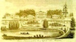 | "Село Знаменское в 17 верстах от Москвы". Неизвестный художник. Нач. XIX в. ГЛМ (Усадьба Знаменское-Губайлово. Атрибуция М.Ю.Коробко. Ранее ошибочно считалась изображением усадьбы Знаменское-Садки). |
В конце 1970-х годов совхозом им. XXI съезда КПСС институту охраны природы были переданы конный и скотный дворы, с которых перед этим были сняты кровли.
Поскольку руководство института не сумело сразу же найти денег на их восстановление, то очень скоро оба памятника превратились в живописные руины. В 1999-2000 годах скотный двор был воссоздан с реконструкцией под спортивно-оздоровительный комплекс. При этом он почти полностью утратил свою ценность в качестве памятника архитектуры. За исключением фасада восточного ризалита все остальные части скотного двора выстроены заново. При этом его исторический внешний вид оказался искажен новой "квази черепичной" кровлей с мансардами, которых первоначально не было. Нужно отметить и то, что в ходе строительства был использован обычный кирпич, а не специальный, применяемый при реставрационных работах. В то же время севернее руин конного двора были возведены сооружения конноспортивного комплекса "Знаменское-Садки".
В результате деятельности всех этих организаций усадьба понесла значительный ущерб. Многие усадебные постройки были уничтожены, сохранившиеся существенно пострадали, спущены все пруды кроме одного, сильно зарос усадебный парк, в своей значительной части превратившийся в лес. На территории усадьбы начато строительство пансионата Министерства сельского хозяйства, около двух десятилетий остающееся незавершенным, возведены и другие поздние сооружения. Все сохранившиеся сооружения понесли значительные утраты.
{1} Холмогоровы В.И. и Г.И. Исторические материалы о церквах и селах XVI-XVIII ст. Вып 8. Пехрянская десятина Московского уезда. М., 1892. С. 152.
{2} Шеппинг Д.О. Древний Сосенский стан Московского уезда/ Сергеев И.Н. Царицыно. Суханово. Люди, события, факты. М., 1998. С. 415.
{3} Шеппинг Д.О. Указ. соч. С. 419.
{4} Холмогоровы В.И. и Г.И. Указ. соч. Там же.
{5} Холмогоровы В.И. и Г.И. Указ. соч. Там же.
{6} Холмогоровы В.И. и Г.И. Указ. соч. С. 152; Шеппинг Д.О. Указ. соч. С. 415.
{7} Холмогоровы В.И. и Г.И. Указ. соч. С. 152-153; Шеппинг Д.О. Указ. соч. С. 415-416.
{8} Холмогоровы В.И. и Г.И. Указ. соч. С. 153.
{9} Холмогоровы В.И. и Г.И. Указ. соч. Там же. Н.С.Урусов похоронен в московском Златоустовском монастыре. См.: Забелин И.Е. Материалы для истории Москвы.Ч.1.М.,1884. С. 536; Московский некрополь. Т.3. М., 1908. С. 244.
{10} Холмогоровы В.И. и Г.И. Указ. соч. Там же.
{11} Цит. по изд.: Минкин А. Скрытое сокровище// За Калужской заставой. 1998. N30. С.14.
{12} Шеппинг Д.О. Указ. соч. Там же.
{13} Трутовский В.К. Сказания о роде князей Трубецких. М., 1891. С. 241-242.
{14} Скворцов Н.А. Архив Московской Св. Синода конторы: Материалы по Москве и Московской епархии за XVIII век. Вып 1. М., 1911. С. 182.
{15} Впервые как владелец Знаменского Д.Ю.Трубецкой значится в экспликации к плану Генерального межевания соседнего имения Ясенево, составленному в 1766 г. См.: РГАДА. Ф. 1354. Оп. 256. Д. 2. "Я", "С". Этот план опубликован нами в изд.: Коробко М.Ю. Ясенево// Усадебное ожерелье Юго-Запада Москвы. [Изд. 3-е, испр.]. М. -СПб., 1997. С. 201. Референт ВНИИ охраны природы М.И.Малышкова опубликовавшая статью об усадьбе ошибочно сочла Д.Ю.Трубецкого двоюродным братом предыдущей владелицы Знаменского-Садков. См.: Малышкова М.И. Подмосковная усадьба "Знаменское-Садки"// Хозяева и гости усадьбы Вяземы. Материалы IX Голицынских чтений 26-27 января 2002 года. Большие Вяземы. 2002. С. 243. Пользуясь случаем, отметим, что статья М.И.Малышковой, являющаяся основой сайта, посвященного усадьбе Знаменское-Садки, носит компилятивный характер, в силу чего содержит многочисленные ошибки и неточности, подробный разбор которых выходит за рамки настоящей работы.
{16} Шеппинг Д.О. Указ. соч. С. 416. {л} РГАДА. Ф. 1355. Оп. 1. Д. 775. Л. 72.
{18} Толстой С.М. Толстой и Толстые. Очерки из истории рода. М., 1990. С. 74. Пользуясь случаем, отметим, что опубликованная С.М.Толстым гравюра "село Знаменское в 17 верстах от Москвы" (нач. XIX в.) из фондов Государственного литературного музея (см. Толстой С.М. Указ. соч. С. 58), ошибочно интерпретирована им как вид усадьбы Знаменское-Садки. Из книги С.М.Толстого эта ошибка попала и в статью М.И.Малышковой. На самом деле, на этой гравюре изображена усадьба Знаменское-Губайлово, ныне находящаяся в черте г. Красногорска Московской области.
{19} Антонов В.В. Живописцы декораторы Скотти в России// Русское искусство второй половины XVIII - первой половины XIX в. Материалы и исследования. М., 1979. С. 95.
{20} Краевед Н.Лосева опубликовала следующий пассаж, посвященный истории плафона: "По рассказам очевидцев, пожилых людей, работающих в усадьбе в настоящее время сторожами, был и третий конь, но потекшая крыша вынудила реставраторов (в период 1970-х годов) скрыть его облаком (одна из загадок усадьбы), из-за чего художественная ценность плафона резко снизилась". См. Лосева Н. Из истории забытой усадьбы// Художник. 1994. N4. С. 27. Однако, на выполненной задолго до реставрационных работ в Знаменском фотографии плафона, опубликованной Н.Я.Тихомировым, колесницу Марса, как и сейчас, везут только два коня. См.: Тихомиров Н.Я. Архитектура подмосковных усадеб. М., 1955. С. 201.
{21} Храповицкий А.В. Памятные записки А.В.Храповицкого, статс-секретаря императрицы Екатерины II. М., 1863 (есть репринт: М., 1990) С. 33; Шильдер Н.К. Император Павел I: Историко-биографический. СПб., 1901. С. 207.
{22} - Коробко М.Ю. Знаменское-Садки// Усадебное ожерелье Юго-Запада Москвы. [Изд. 3-е, испр.]. М. -СПб., 1997. С. 208.
{23} ЦИАМ. Ф. 277. Оп. 2. Д. 2434. Л. 7.
{24} Долгоруков И.М. Капище моего сердца или словарь всех тех лиц, с коими я был в разных отношениях в течение моей жизни. М., 1997. С. 179.
{25} Список сожженных неприятелем помещичьих сел и деревень// Московское дворянство в 1812 году. М., 1912. С. 466.
{26} Рядом в 1990-х гг. установлен и памятник жителям деревни Битцы (Новые Битцы), погибшим в 1941-1945 гг.
{27} ЦИАМ. Ф. 383. Оп. 1. Д. 188. Л. 33 об.
{28} ЦИАМ. Там же. Л. 52 об.-53.
{29} ЦИАМ. Ф. 454. Оп. 4. Д. 16. Л. 108.
{30} Греч А.Н. Венок усадьбам// Памятники Отечества. 1994. N3-4. С. 180-181.
{31} Умбрашко К.Б. М.П.Погодин: Человек. Историк. Публицист. М., 1999. С. 46-47.
{32} Умбрашко К.Б. Указ. соч. Там же.
{33} Здесь и далее цит. по: ОР РГБ. Ф. 231. Р1. К.30.
{34} Погодин М.П. Из "Автобиографии"// Литературное наследство. Т. 97. Кн. 2. М., 1989. С. 182.
{35} Квятковская Н.К. Остафьево. М., 1990. С. 104-105.
{36} В Центральном историческом архиве г. Москвы сохранилась метрическая книга ясеневской церкви с записью об этом событии: "Женился Московского военносиротского отделения смотритель подполковник граф Николай Ильич Толстов [так в тексте - М.К.] 1м браком, понял за себя дочь генерал[а] от инфантерии князя [Н.С.]Волхонскаго [т.е. Волконского - М.К.] Марию Николаеву, о ко[е]й надлежащий обыск за поручителей чинен был. Венчание вершили: иерей Иоанн Александров, диакон Георгий Тимофеев, дьячок Никифор Алексеев". Цит. по изд.: Коробко М.Ю. Усадьба Узкое. Историко-культурный комплекс XVII-XX веков. М., 1996. С. 57. См. также: Толстой С.Л. Мать и дед Л.Н.Толстого. Очерки жизни, дневники, записи и письма по неизданным материалам. М., 1928.
{37} Летопись жизни и творчества Ф.И.Тютчева. Кн. 1. М.-Мураново, 1999. С. 65.
{38} ЦИАМ. Ф. 51. Оп. 8. Д. 324. Л. 356; Ф. 66. Оп. 5. Д. 1700. Л. 7-8. Ф.2132. Оп. 1. Д. 51. Л. 1 об.
{39} ЦИАМ. Ф. 51. Оп. 8. Д. 324. Л. 356.
{40} ЦИАМ. Ф. 66. Оп. 5. Д. 1897. Л. 13; Ф. 2132. Оп. 1. Д. 51, Л 21.
{41} Кириченко Е.И. Михаил Быковский. М., 1988. С. 248. Начало этой традиции, по-видимому, положено профессором архитектуры С.А.Тороповым, который в молодости входил в состав Общества изучения русской усадьбы. См.: Торопов С.А. Подмосковные усадьбы. М., 1947. С. 30.
{42} По мнению Е.И.Кириченко дополнительным аргументом в пользу авторства М.Д.Быковского является принадлежность усадьбы Трубецким, поскольку непосредственным начальником М.Д.Быковского, ставшего архитектором Воспитательного дома, был князь Н.И.Трубецкой - почетный опекун и председатель московского Опекунского совета, президент Московской дворцовой конторы, сенатор, член Государственного совета и кавалер высшей российской награды ордена Андрея Первозванного. См.: Кириченко Е.И. Указ. соч. С. 170. Однако это совсем не тот Н.И.Трубецкой, который был владельцем Знаменского-Садков, а его дальний родственник, имевший аналогичные имя, фамилию и отчество. См. Трутовский В.К. Указ. соч. С. 254-255, 257.
{43} ЦИАМ. Ф. 454. Оп. 4. Д. 16. Л. 108.
{44} Шеппинг Д.О. Указ. соч. С. 416.
{45} ЦИАМ. Ф. 66. Оп. 5. Д. 1700. Л. 40-49.
{46} Подробнее о Шаблыкиных см.: ЦИАМ. Ф. 4. Оп. 14. Д. 2101.
{47} Главные деятели и предшественники судебной реформы. Под ред. К.К.Арсеньева. Бесплатная премия к "Вестнику и библиотеке самообразования" на 1904 год. СПб., 1904. С. 43-45.
{48} ЦИАМ. Ф. 184. Оп. 2. Д. 288.
{49} Коробко М.Ю. Указ. соч. С. 214.
{50} Лукьянов С.М. О Вл.С.Соловьеве в его молодые годы. Материалы к биографии. Кн. 2. Пг., 1918. С. 52.
{51} Соловьев В.С. "Неподвижно лишь солнце любви.". Стихотворения. Проза. Письма. Воспоминания современников. М., 1990. С. 212.
{52} См. об этом также: Коробко М.Ю. Москва Владимира Соловьева. М., 2001. С. 22-23.
{53} Любимов Н.А. Михаил Никифорович Катков и его историческая заслуга по документам и личным воспоминаниям Н.А.Любимова. СПб., 1889. С. 356.
{54} Мещерский Н.П. Воспоминания о М.Н.Каткове (Письмо в Тверитино)// Русский вестник. 1897. N8. С. 68 (Тверитино - подмосковное имение супруги М.Н.Каткова, находившееся в Серпуховском уезде).
{55} Соловьев И. свящ. Незабвенной памяти Михаила Никифоровича Каткова (Краткий биографический очерк) М., 1903. С. 28.
{56} ЦИАМ. Ф. 277. Оп. 1. Д. 1983. Л. 1-2.
{57} Леонтьев К.Н. Страницы воспоминаний. Пг., 1922. С. 32.
{58} Феоктистов Е.М. Воспоминания. За кулисами политики и литературы. Л., 1929. С. 87.
{59} ЦИАМ. Там же; Памятная книжка Московской губернии на 1899 г. М., 1899. С.484; Шрамченко А.П. Справочная книжка Московской губернии (описание уездов), составленная по официальным сведениям управляющим канцелярией Московского губернатора А.П.Шрамченко. М., 1890. С. 32.
{60} ЦИАМ. Ф. 4. Оп. 3. Д. 527. Л. 155; Дворянские и земские санитарные отряды// Дневник войны. Бесплатное приложение к газете "Биржевые ведомости". Изд. 2-е. 1904. N4. 8 июня. С. 32; Джунковский В.Ф. Воспоминания. Т 1. М., 1997. С.74, 153, 281, 303, 378, 425, 546, 548; Т.2. М., 1997. С. 70, 102, 110. 277; А.М.Катков// Искры. 1916. N2. С. 11; Московское дворянство. Списки служивших по выборам 1782-1910. М., 1910. С. 129, 131.
{61} Письмо М.В.Катковой к С.Д.Шереметеву// Российский архив: История Отечества в свидетельствах и документах XVIII-ХХ вв. Вып. VI. М., 1995. С. 444-446.
{62} Шереметев П.С. Крепостная суконная фабрика в селе Остафьеве 1768-1811// Московский край и его прошлое: Очерки по социальной и экономической истории ХVI-ХГС веков. М., 1928. С. 103.
{63} ЦИАМ. Ф. 277. Оп. 2. Д. 2434. Л. 7-8.
{64} Джунковский В.Ф. Указ. соч. Т. 1. С. 301, 304-305.
{65} ЦИАМ. Ф. 277. Оп. 1. Д. 1983; Оп. 2. Д. 2434.
{66} Дмитриева Н.В., Шатилова Е.А. Кое-что о последней владелице Тархан // Московский журнал. 1994. N7. С. 64.
{67} Всероссийское братское кладбище// Искры. 1915. N32. С. 254.
{68} ЦИАМ. Ф. 277. Оп. 2. Д. 2434. Л. 69.
{69} ЦИАМ. Ф. 277. Оп. 1. Д. 1983. Л. 20.
{70} Думин С.В. Титулованные роды Российской империи. Из архивов русского зарубежья//Летопись историко-родословного общества в Москве. Вып. 2. М. 1994. С. 79.
{ 71} ЦГАМО. Ф. 4997. Оп. 1. Д. 167. Л. 4.
{ 72} ЦГАМО. Ф. 4997. Оп. 1. Д. 167. Л. 9.
{ 73} ЦГАМО. Ф. 4997. Оп. 1. Д. 167. Л. 2.
{ 74} ЦГАМО. Ф. 4997. Оп. 1. Д. 167. Л. 3.
{ 75} ЦГАМО. Ф. 4997. Оп. 1. Д. 167. Л. 11.
{76} ЦГАМО. Ф. 4997. Оп. 1. Д. 167. Л. 11 об.
{77} ЦМАМ. Ф. Р-1. Оп. 1. Д. 117. Л. 2; Кончин Е.В. Эмиссары восемнадцатого года. М., 1981. С. 39; Полякова М.А. Судьба "Подмосковных" в 1920-е годы (документы свидетельствуют)// Отечество: Краеведческий альманах. Подмосковье. М., 1996. С. 176.
{78} Злочевский Г.Д. Русская усадьба. Историко-библиографический обзор литературы (1787-1992). М., 2003. С. 441. Об усадебной библиотеке в Знаменском-Садках см. также Греч А.Н. Указ. соч. С. 182.
{79} ОР РГБ. Ф. 120. К. 57. Д. 5.
{80} Церковь, как существующая, значится даже в книге С.А.Торопова, изданной в 1947 г. См. Торопов С.А. Указ соч. Там же.
Последнее изменение страницы 10 Jan 2019
{kind=link}
{kind=link}
{kind=link}
{kind=link}
{kind=link}
{kind=link}
{kind=link}
{kind=link}
{kind=link}
{kind=link}
{kind=link}
{kind=link}